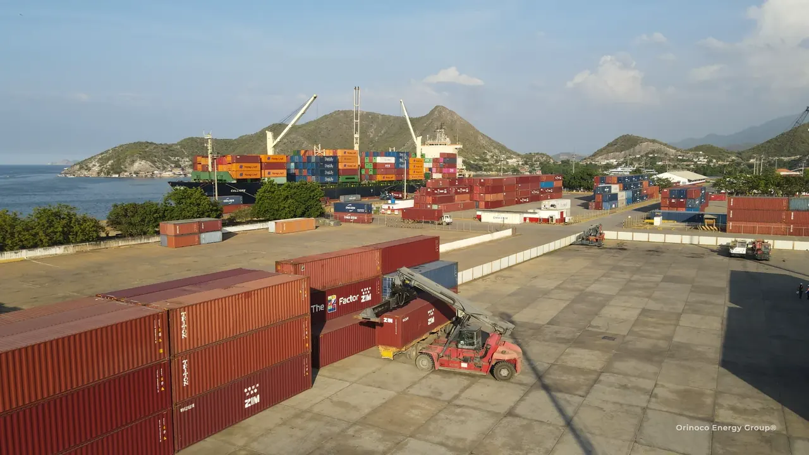
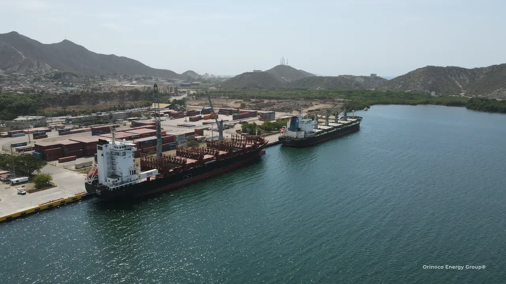

PRE-ARRIVAL
Align documents, the customs procedure, vessel information and the receiving site before arrival.
ADUAVEN / Venezuelan customs & equipment imports
Plan equipment imports before shipment: customs classification, documents and arrival requirements, followed by discharge, inland transport and delivery.
Understand the equipment. Plan its arrival.
ADUAVEN reviews the equipment, its intended use and the importer’s documents before shipment to Venezuela.
The review covers tariff classification, taxes, permits and any applicable customs regime. OCK plans cargo handling; OEG Internacional coordinates transport, storage and delivery.
Discuss your equipment import
Customs planning before shipment
The review starts with the actual equipment and importer. Open each topic to see what the team helps coordinate.
Identify the appropriate tariff subheading from the technical description and function of the equipment. Review the applicable customs tariff, subsequent amendments and the treatment attached to that code.
Useful information: Technical sheet, manufacturer/model, function, material, serial numbers, year and new/used condition.
Review the duties, VAT and official measures relevant to the equipment. Any exemption or relief is assessed against the tariff code, importer, supporting documents and rules in force when the declaration is filed.
Useful information: Importing company, equipment value, origin, commercial invoice, freight/insurance information and intended use.
Identify permits and compare the customs procedures available for the project, including temporary admission where applicable. Confirm the authorizations, deadlines and follow-up required.
Useful information: Receiving project, intended use, period of stay, planned re-export where relevant, and available permits or certificates.
From the vessel to the receiving yard
Equipment arrival connects customs work with the lifting sequence, truck positioning and receiving-yard readiness.
Align documents, the customs procedure, vessel information and the receiving site before arrival.
OCK coordinates the cargo-handling sequence, lifting arrangements and truck positioning for the equipment.
Where the operation allows, coordinate vessel-to-transport discharge and movement to the planned external yard under the required port and customs authorizations.
Coordinate receiving capacity, unloading arrangements, cargo identification, condition records and equipment inventory at the yard.
ADUAVEN follows the declaration, inspections, supporting permits and the customs release or authorized movement required for the cargo.
OEG Internacional connects the receiving yard, onward transport and delivery timing with the project site.
The movement and yard are defined for the specific cargo. Customs release or an authorized transfer procedure is coordinated before the corresponding inland move.

Connected specialist roles
ADUAVEN: customs review, documentation, procedures and release coordination in Venezuela.
OCK: stevedoring, heavy lift and port cargo handling.
OEG Internacional: freight, road transport, storage and distribution coordination.
Explore the group ↗Customs reference documents
ADUAVEN helps interpret the relevant instruments against the equipment’s tariff code and the proposed customs procedure.
A reference for tariff classification. ADUAVEN checks the equipment’s code against the applicable tariff and subsequent amendments.
Read Gaceta 6.804 · PDF copy ↗A reference for reviewing tax measures and tariff amendments. Applicability, effective dates and required documents must be checked for each import.
Read Gaceta 6.952 · PDF copy ↗These PDF copies are hosted by Tradex. ADUAVEN checks the official instruments and subsequent amendments relevant to each declaration before confirming duties or potential benefits.
Request an equipment customs reviewStart with your equipment list
Send the technical sheet, equipment list, invoice or quotation, origin, dimensions, weight, condition and receiving project. Include the target arrival date and whether the equipment will remain in Venezuela or later leave the country.
Contact ADUAVEN through the group ↗